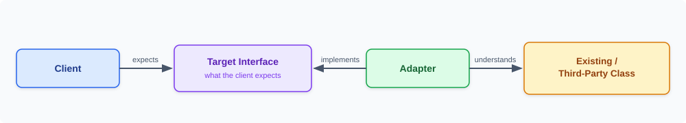
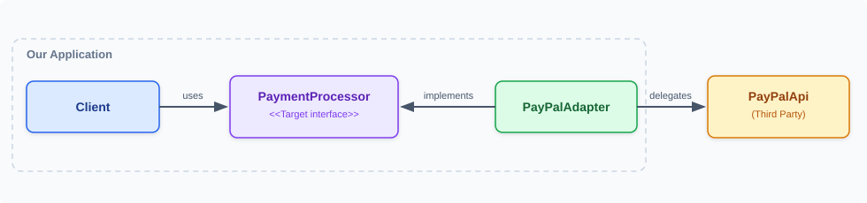
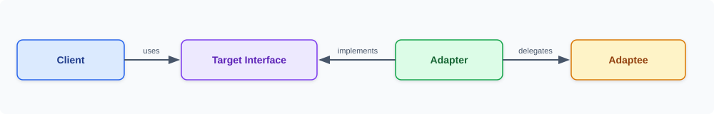
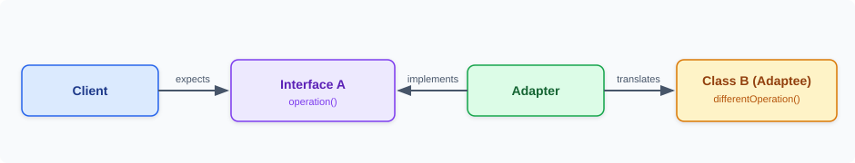

- There is an existing class and its interface does not match the one you need.
- We need to connect systems or components that were not built to work together.
Adapter pattern is a structural design pattern that allows objects with incompatible interfaces to work together.
Adapter allows classes with incompatible interfaces to collaborate without modifying the existing class.
Adapter converts the interface of an existing class into the interface that the client expects.
Adapter catches calls for one object and transforms them to format and interface recognizable by the second object.
Adapter lets classes work together that couldn't otherwise because of incompatible interfaces.
Adapter acts as a bridge between two incompatible interfaces.
# Target interface the client expects
public interface MediaPlayer {
void play(String file);
}
# Adaptee with an incompatible interface
public class LegacyMp3Player {
public void playMp3(String file) {
System.out.println("Playing mp3: " + file);
}
}
# Adapter converts play() into playMp3()
public class Mp3Adapter implements MediaPlayer {
private final LegacyMp3Player player;
public Mp3Adapter(LegacyMp3Player player) {
this.player = player;
}
public void play(String file) {
player.playMp3(file);
}
}
void main() {
MediaPlayer p = new Mp3Adapter(new LegacyMp3Player());
p.play("song.mp3");
}MediaPlayer is the target interface the client codes against.LegacyMp3Player is the adaptee with an incompatible playMp3() method.Mp3Adapter implements the target and delegates to the wrapped adaptee.play() and stays unaware of the legacy method underneath.Definition: Adapter converts the interface of an existing class into an interface expected by the client. It allows classes with incompatible interfaces to collaborate without modifying the existing class.
A simple real-world analogy is a power adapter. A device may expect one type of electrical socket, while the wall provides another. The adapter sits between them and translates one connection into another.

Suppose an application expects every payment provider to implement this interface:
public interface PaymentProcessor {
void pay(double amount);
}The application has a checkout service:
public class CheckoutService {
private PaymentProcessor paymentProcessor;
public CheckoutService(PaymentProcessor paymentProcessor) {
this.paymentProcessor = paymentProcessor;
}
public void checkout(double amount) {
paymentProcessor.pay(amount);
}
}Now imagine that a third-party PayPal library exposes a different API:
public class PayPalApi {
public void makePayment(double amountInDollars) {
System.out.println("Payment made using PayPal: $" + amountInDollars);
}
}The interfaces do not match:
CheckoutService cannot directly use PayPalApi as a PaymentProcessor.
One approach would be to modify the third-party class:
public class PayPalApi implements PaymentProcessor {
@Override
public void pay(double amount) {
makePayment(amount);
}
public void makePayment(double amountInDollars) {
System.out.println("Payment made using PayPal: $" + amountInDollars);
}
}This is usually undesirable or impossible because:
final.Core problem: The existing class works, but its interface does not match what the client expects. We need a translation layer rather than changing either side.
Create an adapter that impl the interface expected by the application and internally delegates to the incompatible class.

The adapter performs the translation: pay(amount) -> makePayment(amount)
Target Interface — the interface expected by the client.
public interface PaymentProcessor {
void pay(double amount);
}Adaptee — the existing class whose interface is incompatible.
public class PayPalApi {
public void makePayment(double amountInDollars) {
System.out.println("Payment made using PayPal: $" + amountInDollars);
}
}Adapter — implements the target interface and delegates to the adaptee.
public class PayPalAdapter implements PaymentProcessor {
private PayPalApi payPalApi;
public PayPalAdapter(PayPalApi payPalApi) {
this.payPalApi = payPalApi;
}
@Override
public void pay(double amount) {
payPalApi.makePayment(amount);
}
}Client
public class CheckoutService {
private PaymentProcessor paymentProcessor;
public CheckoutService(PaymentProcessor paymentProcessor) {
this.paymentProcessor = paymentProcessor;
}
public void checkout(double amount) {
paymentProcessor.pay(amount);
}
}Main
void main(String[] args) {
PayPalApi payPalApi = new PayPalApi();
PaymentProcessor paymentProcessor = new PayPalAdapter(payPalApi);
CheckoutService checkoutService = new CheckoutService(paymentProcessor);
checkoutService.checkout(500);
}Important: CheckoutService only knows about PaymentProcessor. It does not need to know that PayPal is being used internally.
The client thinks it is communicating with PaymentProcessor.
The adapter translates that call into the API understood by PayPalApi.
The Adapter Pattern becomes especially useful when an application integrates several third-party providers.
Common Application Interface
public interface PaymentProcessor {
void pay(double amount);
}Stripe API and Adapter
public class StripeApi {
public void charge(double amount) {
System.out.println("Stripe charged: $" + amount);
}
}
public class StripeAdapter implements PaymentProcessor {
private StripeApi stripeApi;
public StripeAdapter(StripeApi stripeApi) {
this.stripeApi = stripeApi;
}
@Override
public void pay(double amount) {
stripeApi.charge(amount);
}
}PayPal API and Adapter
public class PayPalApi {
public void makePayment(double amountInDollars) {
System.out.println("PayPal payment: $" + amountInDollars);
}
}
public class PayPalAdapter implements PaymentProcessor {
private PayPalApi payPalApi;
public PayPalAdapter(PayPalApi payPalApi) {
this.payPalApi = payPalApi;
}
@Override
public void pay(double amount) {
payPalApi.makePayment(amount);
}
}Razorpay API and Adapter
public class RazorpayApi {
public void createOrder(long amountInPaise, String currency) {
System.out.println("Razorpay order created: " + amountInPaise + " " + currency);
}
}
public class RazorpayAdapter implements PaymentProcessor {
private RazorpayApi razorpayApi;
public RazorpayAdapter(RazorpayApi razorpayApi) {
this.razorpayApi = razorpayApi;
}
@Override
public void pay(double amount) {
long amountInPaise = Math.round(amount * 100);
razorpayApi.createOrder(amountInPaise, "INR");
}
}Client Remains Unchanged — switching providers needs no change to CheckoutService:
// PayPal
PaymentProcessor processor = new PayPalAdapter(new PayPalApi());
CheckoutService checkout = new CheckoutService(processor);
checkout.checkout(500);
// Or Stripe
processor = new StripeAdapter(new StripeApi());
// Or Razorpay
processor = new RazorpayAdapter(new RazorpayApi());| Component | Meaning | Example |
|---|---|---|
| Client | Code that wants to use the service | CheckoutService |
| Target | Interface expected by the client | PaymentProcessor |
| Adapter | Converts calls from Target to Adaptee | PayPalAdapter |
| Adaptee | Existing incompatible class | PayPalApi |

An adapter does not have to translate only method names. It can translate parameters, return values, data models, units, exceptions, and other API conventions.
Legacy API
public class LegacyPaymentApi {
public PaymentResult process(String customerId, int amountInPaise) {
return new PaymentResult(true);
}
}Application Interface
public interface PaymentProcessor {
PaymentResponse pay(PaymentRequest request);
}Adapter
public class LegacyPaymentAdapter implements PaymentProcessor {
private LegacyPaymentApi legacyApi;
public LegacyPaymentAdapter(LegacyPaymentApi legacyApi) {
this.legacyApi = legacyApi;
}
@Override
public PaymentResponse pay(PaymentRequest request) {
int amountInPaise = request.amount() * 100;
PaymentResult result = legacyApi.process(request.customerId(), amountInPaise);
return new PaymentResponse(result.success());
}
}Object Adapter — the adapter contains an instance of the adaptee (composition).
Object adapters are generally the more flexible approach in Java.
public class PayPalAdapter implements PaymentProcessor {
private PayPalApi payPalApi;
public PayPalAdapter(PayPalApi payPalApi) {
this.payPalApi = payPalApi;
}
@Override
public void pay(double amount) {
payPalApi.makePayment(amount);
}
}Class Adapter — uses inheritance plus interface implementation:
public class PayPalAdapter
extends PayPalApi
implements PaymentProcessor {
@Override
public void pay(double amount) {
makePayment(amount);
}
}| Object Adapter | Class Adapter |
|---|---|
| Uses composition | Uses inheritance |
| Contains adaptee instance | Extends adaptee |
| Usually more flexible | More tightly coupled |
| Works with final adaptee classes | Cannot extend a final class |
| Can wrap different instances | Bound to inherited implementation |
Adapters are very common in Spring applications, especially at integration boundaries.
Application Interface
public interface NotificationService {
void send(String recipient, String message);
}External Provider
public class SmsProvider {
public void sendSms(String phoneNumber, String text) {
System.out.println("Sending SMS to " + phoneNumber);
}
}Adapter
@Service
public class SmsProviderAdapter implements NotificationService {
@Autowired
private SmsProvider smsProvider;
@Override
public void send(String recipient, String message) {
smsProvider.sendSms(recipient, message);
}
}Business Service
@Service
public class OrderService {
@Autowired
private NotificationService notificationService;
public void placeOrder() {
// business logic
notificationService.send(
"9876543210",
"Order placed successfully"
);
}
}The business layer is isolated from the external provider's API.
The Adapter Pattern works particularly well with the Dependency Inversion Principle. Instead of tightly coupling business logic to a vendor SDK, the application depends on its own abstraction.
The business layer depends on PaymentProcessor, not directly on PayPalApi, StripeApi, or another vendor implementation.
Architectural benefit: Adapters are especially useful at application boundaries, where internal domain/application models meet external APIs, SDKs, legacy systems, databases, messaging systems, or infrastructure libraries.
pay() but actual makePayment().The client does not depend directly on the adaptee; it talks only to the target interface.
Existing classes can be reused without modifying them.
New providers are integrated by adding new adapters rather than modifying existing business logic.
External APIs remain behind an application-owned interface, so vendor changes stay contained.
Business services can be tested against the application interface without requiring the real external provider.
Design guideline: Keep adapters focused on integration and translation. Avoid turning an adapter into a large business-service class.
| Pattern | Main Purpose | Typical Question |
|---|---|---|
| Adapter | Make incompatible interfaces compatible | How can I make these two incompatible APIs work together? |
| Facade | Simplify a complex subsystem | How can I provide one simple entry point to several services? |
| Decorator | Add behavior without changing the interface | How can I add functionality dynamically? |
| Proxy | Control access to another object | How can I control or intercept access? |
| Bridge | Separate abstraction from implementation | How can I vary these two dimensions independently? |
| Composite | Treat individual objects and groups uniformly | How can clients treat a tree and a leaf the same way? |
Adapter vs Decorator in one sentence: Adapter changes how an object is accessed (it changes the interface); Decorator changes or extends what the object does while normally preserving the same interface.
Whenever you see an expected interface and an existing incompatible implementation, insert an adapter that performs operation() → differentOperation().

| Concept | Remember |
|---|---|
| Adapter | Converts one interface into another expected interface. |
| Target | The interface the client expects. |
| Adaptee | The existing incompatible class. |
| Client | Uses the Target interface. |
| Object Adapter | Uses composition; adapter contains the adaptee. |
| Class Adapter | Uses inheritance; adapter extends the adaptee. |
| Spring Usage | Very useful for isolating external SDKs and APIs. |